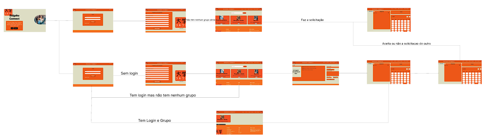
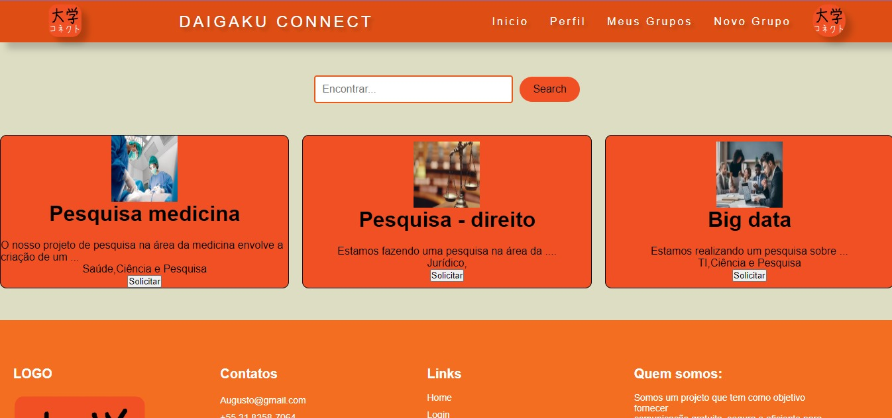
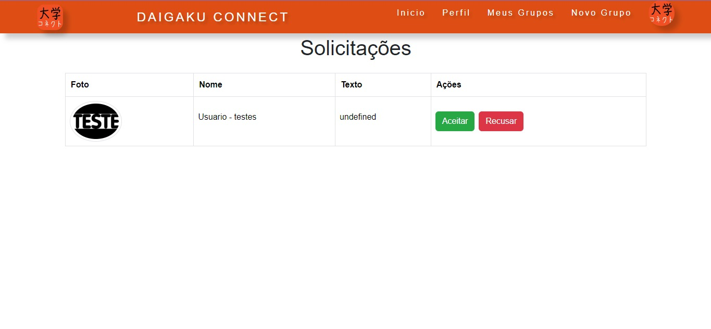

Introdução
Informações básicas do projeto como nome e membros da equipe.
Informações Gerais
- Projeto: Daigaku-Connect
- Repositório GitHub: https://github.com/ICEI-PUC-Minas-PMGCC-TI/ti-1-pmg-cc-t-20241-nameagame
- Membros da equipe:
Obs: O repositório possui o nome de nameagema devido a junção dos grupos Daigaku-Connect e Nameagame no início do semestre, no qual se deu continuidade a ideia do Daigaku-Connect (A plataforma de gerenciamento de grupos universitários)
Contexto
Detalhes sobre o espaço de problema, justificativas e os objetivos do projeto.
Problema
O problema em questão envolve a dificuldade de formação de grupos para o desenvolvimento de trabalhos universitários, seja em sua montagem ou na busca de integrantes para os desenvolvê-los.
Objetivos
O objetivo deste projeto é desenvolver uma plataforma capaz de facilitar a busca de grupos ou de integrantes para seus grupo, como também facilitar o seu próprio gerenciamento em si
Justificativa
A busca por projetos ou até mesmo de integrantes interessados e qualificados para o desenvolvimento de projetos, sempre foi um problema no meio acadêmico. Portanto o tema do projeto escolhido se baseou em uma questão no qual a maioria do grupo vivencia, e por isso, acredita-se que este projeto poderia impactar positivamente o meio universitário, facilitando a busca e o desenvolvimento de projetos de interesse dos alunos das mais diversas universidades.
Público-alvo
Como dito anteriormente, o projeto tem como alvo pessoal o meio acadêmico em geral, sejam aqueles que buscam projetos para se integrar ou até mesmo aqueles que necessitam encontrar novos integrantes para seus próprios projetos. Buscando entendermos melhor o nosso público-alvo, realizou-se uma pesquisa para garantir um número maior e distinto de opiniões sobre o tema. A partir desta pesquisa desenvolveu-se personas que representassem nosso público alvo.
Concepção (Design Thinking)
Detalhes do processo de discovery do projeto.
Apresente o processo de discovery do projeto. Com foco na experiência do usuário, esse processo abrange a compreensão do contexto do problema e das características do usuário, a definição do problema, a geração de ideias, a prototipagem e a elaboração de uma proposta de solução
Processo de Design Thinking
O arquivo que se segue apresenta o resultado desse processo.
Apresente o processo de Design Thinking realizado pelo grupo e documentado por meio do software Miro. No documento apresentado, devem ser incluídos: (1) a matriz CSD, (2) o mapa de stakeholders, (3) as personas, (4) as respectivas propostas de valor e (5) o processo de ideação identificando as ideias levantadas e sua priorização.
Especificações do Projeto
Documentação das especificações do projeto.
Apresente as especificações do projeto, incluindo as histórias de usuário e os requisitos funcionais e não funcionais.
Histórias de Usuários
Com base na análise das personas foram identificadas as seguintes histórias de usuários:
Apresente aqui as histórias de usuário que são relevantes para o projeto de sua solução. As Histórias de Usuário consistem em uma ferramenta poderosa para a compreensão e elicitação dos requisitos funcionais e não funcionais da sua aplicação. Se possível, agrupe as histórias de usuário por contexto, para facilitar consultas recorrentes à essa parte do documento.
| EU COMO... | QUERO/PRECISO... | PARA... |
|---|---|---|
| Mariana, a Estudante Proativa | Conhecer pessoas com os mesmos interesses para trabalhos academicos | Encontrar outros estudantes para trabalhar com ela |
| João, o Estudante Indeciso | Encontrar ideias de projetos interessantes | Preciso de um projeto para me formar |
| Rafael, o Líder de Grupo | Preciso de mais membros para o meu grupo | Facilitar o gerenciamento do projeto |
Histórias de Usuários completas:
Mariana, a Estudante Proativa:
Problema: Mariana é uma estudante de Engenharia que adora projetos desafiadores e está ansiosa para desenvolver seu portfólio. Ela tem uma ideia incrível para um projeto de pesquisa, mas não conhece ninguém na sua turma com o mesmo interesse e não sabe como encontrar outros estudantes para trabalhar com ela.
Objetivo: Mariana quer encontrar outros estudantes com interesses semelhantes para formar um grupo e desenvolver seu projeto de pesquisa. Ela busca uma plataforma fácil de usar, onde possa publicar sua ideia e encontrar pessoas qualificadas para se juntar ao seu grupo.
História: "Eu estava super animada com a minha ideia de projeto de pesquisa sobre inteligência artificial, mas não conhecia ninguém na minha turma com o mesmo interesse. Passei dias procurando em grupos do Facebook e em fóruns online, mas não encontrei nada. Até que descobri essa plataforma incrível! Pude publicar minha ideia e, em poucos dias, vários estudantes interessados me contactaram. Foi fácil formar um grupo com pessoas talentosas e motivadas. Agora, estamos trabalhando juntos em um projeto incrível, e estou aprendendo muito!"
João, o Estudante Indeciso:
Problema: João é um estudante de Administração que está em seu último ano da faculdade e precisa de um projeto para se formar. Ele não tem uma ideia específica e sente dificuldade em escolher um tema que lhe interesse e que seja desafiador.
Objetivo: João busca uma plataforma que o ajude a encontrar ideias de projetos interessantes, avaliar a viabilidade de cada tema, e identificar grupos já formados com os quais ele possa se juntar.
História: "Estava perdido, sem saber por onde começar meu projeto de conclusão de curso. A ideia de ter que pensar em um tema e encontrar pessoas para trabalhar comigo me deixava ansioso. Aí encontrei essa plataforma e me surpreendi! Pude navegar por diversos projetos, ler as descrições e finalmente, achei um projeto que me interessava e me encaixava. Foi muito mais fácil do que eu imaginava!"
Rafael, o Líder de Grupo:
Problema: Rafael é um estudante de Direito que lidera um grupo de estudos para a disciplina de Processo Penal. Ele precisa de mais membros para o grupo, mas tem dificuldade em encontrar pessoas que se encaixem na dinâmica do grupo e que tenham o mesmo nível de comprometimento.
Objetivo: Rafael quer uma plataforma onde ele possa divulgar as vagas do seu grupo de estudos e encontrar novos membros com perfil adequado, facilitando o gerenciamento do grupo e a comunicação entre os participantes.
História: "Eu estava com dificuldades para encontrar mais pessoas para o meu grupo de estudos. Tínhamos um bom ritmo, mas precisávamos de mais gente. A plataforma foi a solução! Publiquei uma vaga com as informações do nosso grupo e os requisitos para participar. Recebi vários pedidos de entrada e, em poucos dias, conseguimos completar o grupo com pessoas engajadas e dispostas a aprender. A plataforma me ajudou a organizar o grupo e a manter a comunicação fluida entre todos."
Requisitos
As tabelas que se seguem apresentam os requisitos funcionais e não funcionais que detalham o escopo do projeto.
Com base nas Histórias de Usuário, enumere os requisitos da sua solução. Classifique esses requisitos em dois grupos:
- Requisitos Funcionais (RF): correspondem a uma funcionalidade que deve estar presente na plataforma (ex: cadastro de usuário).
- Requisitos Não Funcionais (RNF): correspondem a uma característica técnica, seja de usabilidade, desempenho, confiabilidade, segurança ou outro (ex: suporte a dispositivos iOS e Android).
Lembre-se que cada requisito deve corresponder à uma e somente uma característica alvo da sua solução. Além disso, certifique-se de que todos os aspectos capturados nas Histórias de Usuário foram cobertos.
Requisitos Funcionais
| ID | Descrição do Requisito | Prioridade |
|---|---|---|
| RF-001 | O Sistema requer um cadastro de usuários/empresas | ALTA |
| RF-002 | O Sistema requer um cadastro de projetos/grupos | ALTA |
| RF-003 | O Sistema vai necessitar de sistema de busca de projetos | MEDIA |
| RF-004 | O Sistema tem que conter um meio de integrar novos integrantes aos grupos | ALTA |
| RF-005 | O Sistema tem que conter um meio de compartilhamento de Documentos/arquivos | MEDIA |
| RF-006 | O Sistema tem que conter uma agenda/calendário de entregas e pendências | MEDIA |
| RF-007 | O Sistema deve conter um meio de integração com Ferramentas de Produtividade(Google Drive, Microsoft Office, Figma, etc) | MEDIA |
| RF-008 | O Sistema deve disponibilizar os projetos criados ao demais usuarios | ALTA |
Requisitos Não-Funcionais
| ID | Descrição do Requisito | Prioridade |
|---|---|---|
| RNF-001 | O Sistema será Web, então tem que ser acessível e adaptável a qualquer dispositivo | MÉDIA |
| RNF-002 | Os Usuários tem que estar dispostos a ceder dados para usabilidade | MÉDIA |
| RNF-001 | O Sitema deve informar quais dados serão utilizados | MÉDIA |
| RNF-002 | O Sistema será produzido em HTML, CSS, JS com um JSONServer como BackEnd | ALTA |
Projeto de Interface
Artefatos relacionados com a interface e a interacão do usuário na proposta de solução.
Apresente a ideia de interface que está sendo prevista para o projeto. Inclua os wireframes, o user/screen flow e o protótipo interativo.
User/Screen Flow e Protótipo
Artefatos relacionados com a interface e a interacão do usuário na solução proposta.
O fluxo de usuário (User Flow) é uma técnica que permite ao desenvolvedor mapear todo fluxo de telas do site ou app. Essa técnica funciona para alinhar os caminhos e as possíveis ações que o usuário pode fazer junto com os membros de sua equipe. 
Um protótipo interativo apresenta o projeto de interfaces e permite ao usuário navegar pelas funcionalidades como se estivesse lidando com o software pronto. Veja o exemplo a seguir.
DIAGRAMA DE USER FLOW, Planejamento de telas pelo qual o usuário percorrerá: Este tópico contém um protótipo desenhando a mão de um tela de inicio, no qual o usuário se deparará ao entrar pela primeira vez em nosso site, nela ele será direcionado a uma tela de login (caso já possua conta) ou a uma tela de cadastro (caso não tenha conta), caso não haja projetos será direcionado a uma tela para procurar por projetos para que faça parte, ou se optar poderá criar um novo grupo para o desenvolvimento de um novo projeto. Ao clicar para se integrar a um projeto uma solicitação de novo membro será feita ao projeto indicado, caso for aceita o novo integrante poderá acessar a página de gerenciamento do projeto que conterá uma aba de gerenciamento de arquivos e tarefas daquele respectivo grupo, bem como um calendário onde se armazenam tais tarefas em seu respectivo dia, também terá em sua disponibilidade uma aba para a inclusão de plataforma, as quais o grupo poderá utilizar.
Wireframes
Protótipo de telas do sistema em baixa fidelidade (rascunhos).
Os Wireframes são protótipos das telas da aplicação usados em design de interface para sugerir a estrutura de um site web e seu relacionamentos entre suas páginas. Um wireframe web é uma ilustração semelhante ao layout de elementos fundamentais na interface. 
De forma semelhante ao anterior, este protótipo feito no figma contém uma tela de inicio, no qual o usuário se deparará ao entrar pela primeira vez em nosso site, nela ele será direcionado a uma tela de login (caso já possua conta) ou a uma tela de cadastro (caso não tenha conta), caso não haja projetos será direcionado a uma tela para procurar por projetos para que faça parte, ou se optar poderá criar um novo grupo para o desenvolvimento de um novo projeto. Ao clicar para se integrar a um projeto uma solicitação de novo membro será feita ao projeto indicado, caso for aceita o novo integrante poderá acessar a página de gerenciamento do projeto que conterá uma aba de gerenciamento de arquivos e tarefas daquele respectivo grupo, bem como um calendário onde se armazenam tais tarefas em seu respectivo dia, também terá em sua disponibilidade uma aba para a inclusão de plataforma, as quais o grupo poderá utilizar. 
Metodologia
Detalhes sobre a organização do grupo e o ferramental empregado.
Nesta parte do documento, você deve apresentar a metodologia adotada pelo grupo, descrevendo o processo de trabalho baseado nas metodologias ágeis, a divisão de papéis e tarefas, as ferramentas empregadas e como foi realizada agestão de configuração do projeto via GitHub.
Coloque detalhes sobre o processo de Design Thinking e a implementação do Framework Scrum seguido pelo grupo. O grupo poderá fazer uso de ferramentas on-line para acompanhar o andamento do projeto, a execução das tarefas e o status de desenvolvimento da solução.
Ferramentas
Relação de ferramentas empregadas pelo grupo durante o projeto.
Liste as ferramentas empregadas no desenvolvimento do projeto, justificando a escolha delas, sempre que possível. Inclua itens como: (1) Editor de código, ferramentas de comunicação, ferramentas de diagramação, plataformas de hospedagem, entre outras.
| Ambiente | Plataforma | Link de Acesso (Nome do link representativo, click para acessar) |
|---|---|---|
| Processo de Design Thinking | Miro | https://miro.com/Daigaku-Connect |
| Repositório de código e documentação | GitHub - Repositório | https://github.com/Daigaku-Connect |
| Hospedagem do JSONServer | Replit | https://replit.com/Daigaku-Connect |
| Protótipo de telas | Figma | https://figma.com/Daigaku-Connect |
| Kanban | GitHub - Kanban | https://github.com/orgs/ICEI-PUC-Minas-PMGCC-TI/projects/21 |
| Apresentações e slides | Canva | https://www.canva.com/design/... |
Gestão do Projeto
Divisão de papéis no grupo e apresentação da estrutura da ferramenta de controle de tarefas (Kanban).
Apresente a divisão de papéis e tarefas entre os membros do grupo. Informe quem é o Scrum Master, o Product Owner e os desenvolvedores. Informe também quem é o responsável pela documentação do projeto.
Apresente o quadro de gerenciamento do time (Kanban), seu formato e as experiências na utilização dessa ferramenta (GitHub Projects)
Augusto (Product owner): Responsável pelo registro de dados do usuário, integração conjunta do json server e cadastro do usuário.
Davi (scrum master): Responsável pelas funcionalidades do gerenciamento de grupo como agenda de tarefas e integração de plataformas de produtividade, bem como a documentação.
Alexandre: Responsável pelo desenvolvimento das funcionalidades de perfil do usuário como também funções de aceitação e rejeição de membros
Gabriel: Responsável pelas funcionalidades referentes a página de pesquisa de grupos bem como o algoritmo referente a busca e disponibilização dos próprios grupos aos usuários.
Controle de Versão
Estrutura do fluxo de trabalho no ambiente do GitHub.
Discuta como a configuração do projeto foi feita na ferramenta de versionamento (GitHub). Exponha como a gerência de tags, merges, commits e branchs é realizada. Discuta como a gerência de issues foi realizada.

Organização das pastas no GitHub:
O gerenciamento do repositório no GitHub se deu com base na divisão de pastas referentes a tópicos de assuntos e sub-assuntos do projeto, como pastas direcionadas a documentação (/docs), onde estão presentes arquivos como apresentações, a própria documentação do projeto, index, Readme.md, e imagens em geral, também há pastas relacionadas a parte dos códigos (/código) em si, contendo os arquivos relacionados ao desenvolvimento de cada uma das páginas e requisitos, separadas em suas respectiva pasta, bem como uma pasta contendo a junção dos próprios requisitos
Gerenciamento de comits:
Os commits foram feitos de forma que cada membro do grupo não interferisse nos arquivos referentes ao de outro membro, assim evitando conflitos e problemas de merge. Cada commit foi feito diretamente na main, ou seja, não houve a utilização de branches, cada commit realizado conteve como título o atributo ou funcionalidade ao qual se referia. Portanto, a comunicação das responsabilidades, das atribuições, bem como dos requisitos referente a cada membro foi uma etapa essencial para um desenvolvimento organizado do projeto. Como discutido anteriormente metodologias como o método Kanban foram uma das alternativas utilizadas para a distribuição e organização das responsabilidades
Solução
Esta seção apresenta todos os detalhes da solução criada no projeto.
Apresente cada uma das funcionalidades que a aplicação fornece tanto para os usuários quanto aos administradores da solução.
Inclua, para cada funcionalidade, itens como: (1) titulos e descrição da funcionalidade; (2) Estrutura de dados associada; (3) o detalhe sobre as instruções de acesso e uso.
Video do Projeto
O vídeo a seguir traz uma apresentação do problema que a equipe está tratando e a proposta de solução.
O video de apresentação é voltado para que o público externo possa conhecer a solução. O formato é livre, sendo importante que seja apresentado o problema e a solução numa linguagem descomplicada e direta.
Utilize o recurso de compartilhamento via embed e inclua o vídeo logo abaixo.
Link do video de Apresentação do Projeto: https://youtu.be/J-3XdYiR8eU
Funcionalidades
Esta seção apresenta as funcionalidades da solução.
Apresente cada uma das funcionalidades que a aplicação fornece tanto para os usuários quanto aos administradores da solução.
Inclua, para cada funcionalidade, itens como: (1) titulos e descrição da funcionalidade; (2) Estrutura de dados associada; (3) o detalhe sobre as instruções de acesso e uso.
Funcionalidade 1 - Login/Cadastro de Usuarios
Caso o usuario não seja logado permite a inclusão de informações do usuario no sistema
- Estrutura de dados: Cadastro de Usuarios
- Instruções de acesso:
- Abra o site e efetue o cadastro
- Ao cadastrar seu usuario será mantido no sistema
- A partir de agora ao efetuar login com as informações inseridas o usuario poderá entrar no site

Funcionalidade 2 - Cadastro de projetos/grupos
O usuario podera criar projetos que ficarão disponiveis a outros usuarios
- Estrutura de dados: Cadastro de projetos
- Instruções de acesso:
- Ao clicar em novo grupo o usuario será redirecionado a pagina de criação de projetos
- APodendo criar um projeto personalizado
Funcionalidade 3 - Sistema de busca de projetos
Os projetos criados poderão ser visualizados e procurados atravez do sistema de busca
- Estrutura de dados: Busca de projetos
- Instruções de acesso:
- Ao efetuar login o usuario será redirecionado a pagina de busca de projetos
- Onde poderá procurar um projeto de sua escolha ou criar um novo

Funcionalidade 4 - Integração de novos integrantes aos grupos
Usuarios poderão solicitar para poderem fazer parte de um grupo
- Estrutura de dados: Integração de novos integrantes
- Instruções de acesso:
- Cada projeto poderá receber solicitações de novos integrantes
- Caso aceite o usuario indicado poderá acessar o projeto

Funcionalidade 5 - Compartilhamento de Documentos/arquivos
Na pagina de gerenciamento de projetos se terá uma aba para inclusão de documentos e arquivos do projeto
- Estrutura de dados: Compartilhamento de Documentos
- Instruções de acesso:
- Basta o usuario clicar no " + " na aba de arquivos que esta dentro da pagina de gerenciamento de grupos
- Podendo assim adicionar um arquivo local o qual ficará disponivel a todos os usuarios pertecentes ao grupo
Funcionalidade 6 - Agenda/Calendário de entregas e pendências
Na pagina de gerenciamento de projetos se terá também um calendario integrado a uma aba de tarefas, as quais poderão ser incluidas em cada dia
- Estrutura de dados: Agenda/Calendário
- Instruções de acesso:
- Cada grupo terá em sua disposição uma agenda que indica o dia atual
- Ao clicar em algum dia uma aba de inclusão de tarefas será aberta
- Ao incluir uma tarefa no dia selecionado as tarefas aparecerão na aba tarefas acima do calendario apenas
quando o dia correspondente for selecionado
Funcionalidade 7 - Integração com Ferramentas de Produtividade
Novamente na pagina de gerenciamento de projetos se terá também uma aba na qual se podera linkar plataformas que poderão ser usadas pelos grupos
- Estrutura de dados: Ferramentas de Produtividade
- Instruções de acesso:
- Cada grupo também terá em sua disposição uma aba para inclusão de plataformas
- Ao clicar em incluir mais plataformas, uma aba para inclusão de plataformas será aberta
- Ao preencher os campos com as informações correspondente basta clicar em incluir para que a plataforma
seja mostrada na aba Ferrementas de Produtividade
Funcionalidade 8 - Sistema de disponibilização de projetos
Os projetos/grupos anteriormente criados pelos usuarios ficarão disponiveis a outros usarios bem como também poderá se visualizar apenas os grupos dos quais o usuario faz parte
- Estrutura de dados: Disponibilização de projetos
- Instruções de acesso:
- Ao efetuar o login ou ao clicar em meus grupos
- O usuario será redirecionado para uma pagina onde poderá visualizar os grupos ao qual faz parte
ou que poderá solicitar entrada em um novo grupo pesquisado
Funcionalidade 9 - Edição de perfil
O usuario após logado poderá editar seu perfil de forma personalizada
- Estrutura de dados: Edição de perfil
- Instruções de acesso:
- Ao clicar em Perfil o usuario será redirecionado a uma pagina onde podera visualizar seu perfil
- Caso queira podera clicar em editar perfil
- Onde poderá alterar ou adicionar informações que constarão em seu perfil
Estruturas de Dados
Descrição das estruturas de dados utilizadas na solução com exemplos no formato JSON.
Apresente as estruturas de dados utilizadas na solução tanto para dados utilizados na essência da aplicação quanto outras estruturas que foram criadas para algum tipo de configuração
Nomeie a estrutura, coloque uma descrição sucinta e apresente um exemplo em formato JSON.
Estrutura de Dados - Cadastro de Usuarios
Informações obitidas para o cadastro do usuario
{
"Nome": "",
"Bio": "",
"Foto_perfil": "",
"Dominio": "",
"Origem": "",
"Idade": "",
"Area_de_Atuacao": "",
"Curso": "",
"Telefone": "",
"Email": "",
"Senha": "",
"Grupos": [],
"id":
}
Estrutura de Dados - Cadastro de projetos
Informações e topicos relacionados a cada projeto/trabalho
{
"Trabalho":[
{
"id":"",
"foto":"",
"Nome":"",
"Área_de_atuação":[
"",
""
],
"Tarefas":,
"Arquivos":,
"Plataformas":,
"Integrantes":,
"Solicitados":,
"Pesquisa":,
"Usuario":
]
}
}
Estrutura de Dados - Busca de projetos
Informações utilizadas para a busca de pojetos
{
"Pesquisa":[
{
"id":"",
"pesquisar":"",
"titulo":""
}
]
}
Estrutura de Dados - Integração de novos integrantes
Estruturas contidas em Trabalho com as informações de cada integrante pertencente ao grupo
{
{
"Status": "",
"Id_Usuario": "",
"Id_Projeto": ,
"id":
},
}
Estrutura de Dados - Compartilhamento de Documentos
Estrutura de dados dos arquivos contidos em cada trabalho
{
Arquivo":[
{
"idGrupo":"",
"Nome":"",
"Conteudo":"",
"id": ""
}
],
}
Estrutura de Dados - Agenda/Calendário
Estrutura das tarefas contidas em cada dia do calendario
{
"Tarefas":[
{
"Nome da Tarefa":"",
"Descrição da Tarefa":"",
"Data":"",
"Feito":"",
"Cor":""
}
],
}
Estrutura de Dados - Ferramentas de Produtividade
Estrutura das informações necessarias para exibição das plataformas de contidas em cada trabalho
{
"Plataformas":[
{
"Logo":"",
"Nome_da_plataforma":"",
"Não_quero_ver":"",
"Link":"",
"id":"",
}
],
}
Estrutura de Dados - Disponibilização de projetos
Uso das informações de cada projeto para sua disponibiliação a outros usuarios
{
"Trabalho":[
{
"id":"",
"foto":"",
"Nome":"",
"Área_de_atuação":[
"",
""
],
"Calendário":,
"Tarefas":,
"Arquivos":,
"Plataformas":,
"Integrantes":,
"Solicitados":,
"Pesquisa":,
"Usuario":
]
}
}
Estrutura de Dados - Edição de perfil
Uso das informações de cada usuario para sua edição
{
"Nome": "",
"Bio": "",
"Foto_perfil": "",
"Dominio": "",
"Origem": "",
"Idade": "",
"Area_de_Atuacao": "",
"Curso": "",
"Telefone": "",
"Email": "",
"Senha": "",
"Grupos": [],
"id":
}
Módulos e APIs
Esta seção apresenta os módulos e APIs utilizados na solução.
Apresente os módulos e APIs utilizados no desenvolvimento da solução. Inclua itens como: (1) Frameworks, bibliotecas, módulos, etc. utilizados no desenvolvimento da solução; (2) APIs utilizadas para acesso a dados, serviços, etc.
Images:
- Icones reprentativos - https://fontawesome.com/kits
- Logo do Projeto - https://raw.githubusercontent.com/ICEI-PUC-Minas-PMGCC-TI
- E imagens locais
Fonts:
- JSONServer - https://replit.com/@davicandidopucm/Daigaku-Connectjson
- Cards e estilos Bootstrap - http://getbootstrap.com/
- Icones reprentativos - https://fontawesome.com/
Scripts:
- jQuery - http://www.jquery.com/
- Bootstrap 5.3.3 - https://getbootstrap.com/
FAQ
Perguntas e respostas comuns associadas ao projeto.
Apresente uma lista de perguntas e respostas comuns associadas ao projeto. Inclua perguntas como: (1) detalhes de acesso e uso do projeto; (2) informações sobre a instalação e configuração da aplicação; (3) questões sobre a manutenção da aplicação; (4) detalhes sobre a integração da aplicação com outros sistemas; (5) questões sobre a segurança da aplicação.
Referências Bibliográficas
Esta seção apresenta as referências bibliográficas utilizadas no projeto.
Apresente as referências bibliográficas utilizadas no projeto. Inclua itens como: (1) livros, artigos, tutoriais, etc. utilizados no desenvolvimento da solução; (2) links para sites, blogs, etc. utilizados no desenvolvimento da solução.
PARKER, Geoffrey G.; VAN ALSTYNE, Marshall W.; CHOUDARY, Sangeet Paul. Plataforma: a revolução da estratégia. Alta books, 2019.
VÍDEO, C. EM. Começa aqui o novo @CursoemVideo de HTML5 e CSS3. Disponível em: https://www.youtube.com/watch?v=Ejkb_YpuHWs&list=PLHz_AreHm4dkZ9-atkcmcBaMZdmLHft8n. Acesso em: 01 abr. 2024.
VÍDEO, C. EM. Primeiros passos com Flexbox CSS - @CursoemVideo HTML5 + CSS3. Disponível em: https://www.youtube.com/watch?v=YeGn9nGies0. Acesso em: 05 mai. 2024.
CONSOLEVIEW. Calendário Personalizado - HTML5,CSS3 e JavaScript. Disponível em: https://www.youtube.com/watch?v=a815HQ2dwtU. Acesso em: 10 mai. 2024.
Stack Overflow - where developers learn, share, & build careers. Disponível em: https://stackoverflow.com/. Acesso em: 15 mai. 2024.
W3Schools online web tutorials. Disponível em: https://www.w3schools.com/. Acesso em: 15 mai. jun. 2024.